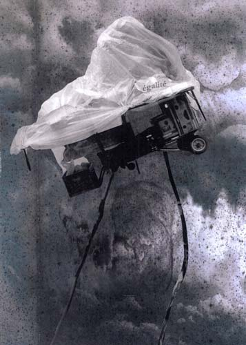

Details
Vernissage: 25. November 2011
Eröffnung: Mag. Andreas Krisof (Kurator section.a)
Die Ausstellung war bis 19. Jänner 2012 zu besichtigen.
Montagen und Zeichnungen

Vernissage: 25. November 2011
Eröffnung: Mag. Andreas Krisof (Kurator section.a)
Die Ausstellung war bis 19. Jänner 2012 zu besichtigen.